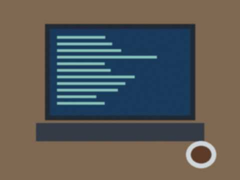
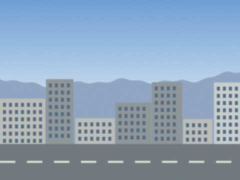

Saturday, February 14th, 2015 · 11:30 pm
Final: Sarchashma United vs Citadel Rush. 14-14 on inferno, last round, the bomb is planted, 4 seconds to the kaboom, and the power cut. All the monitors black. Complete silence. A boy said "don't touch anything!", but nobody was touching anything.
When the light came back (31 minutes later) the match was gone: the server restarted. We had to decide by a coin. Dilshat-aka said "we do not decide a final by a coin". We did a 1v1 on aim_map between the two captains, with knives, at 1 a.m., with 40 people in the room.
Sarchashma United won, the captain of Citadel Rush shook his hand, and told him "you were lucky". It was true.
Saturday, January 10th, 2015 · 9:30 pm
They are called Ak Gül ("white flower"), five girls from the philology building at TSU, one of them is the sister of a Misgaron Boy, who now hates it. They have lost two matches 16-2 and 16-4 and won the third 16-15 in overtime on inferno. The room stood up. I am not joking, all the room stood up and clapped, and the guys they beat clapped too.
The Lagers captain said "she was camping at B". The girl (the captain of Ak Gül) said "yes, I was camping at B and your whole team was running into it". Beautiful.
Saturday, December 6th, 2014 · 10:10 pm

New bracket on the wall. This time Dilshat-aka gave us the WHOLE wall and a new marker, the thick one.Registration closed in 4 days: 12 teams. Two are from Nurzhan (they came by the bus on purpose), one team is only girls (!), one team is 14-year-olds who say they are "retired".
New rules after last winter:
- Maps: dust2, inferno, nuke, train, plus de_cbble if both captains agree
- The admin (Dilshat-aka or his technician) can stop a match if somebody turns the fan toward another player's keyboard
- Substitutes allowed, but only if they came at the start
- If the light goes out: pause the game, count to 300, continue
First round on the 19th.
Sunday, September 14th, 2014 · 7:00 pm

The TSU lecture building, first day, 8 a.m. Everybody pretends to know where to go.I am in the university, computer science (on a grant place! 3 months ago I was scared). First week, the lecture rooms are huge, nobody knows anything, we all sit at the back. A guy told me that CS 1.6 is "a dead game, only old men play". I told him I run a league. He asked how old the oldest player is. I said 41, a taxi driver from Temir-Kapka. He went quiet.
Sunday, June 1st, 2014 · 12:30 pm
Done. I don't want to talk about it. We wrote for 4 hours, I think I got math right. History: sort of. English: yes.
Going to the club tonight for 3 hours. My mother said "just 3". Mothers are great.